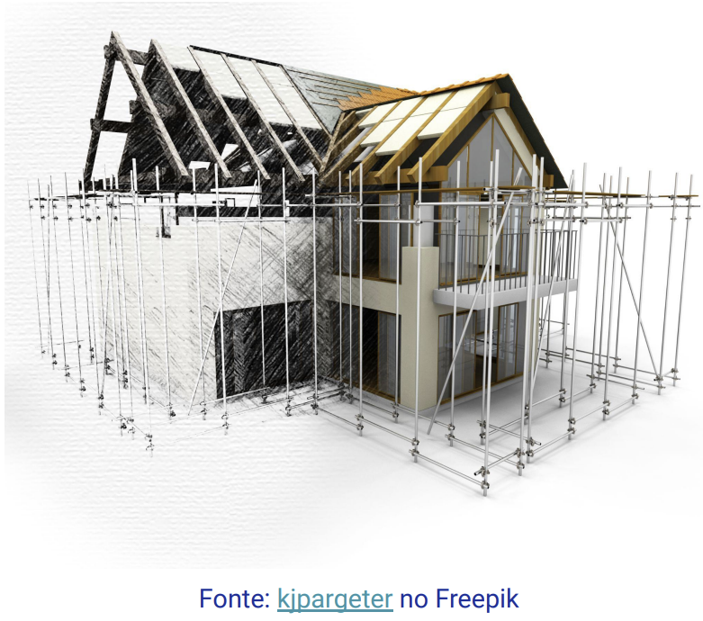

Disciplinas
ENGENHARIA DE SOFTWARE-T01-2024-2 Concluído
Materiais
Vídeo 1 - [UFMS Digital] ENGENHARIA DE SOFTWARE - Módulo 1 - Unidade 1 - Definição e visão geral da área de Engenharia de Software sendProf.ª ministrante: Débora Maria Barroso Paiva
Objetivo
- Entender os principais conceitos e definições da Engenharia de Software e os diferentes modelos que podem ser utilizados para conceber, projetar e desenvolver software.
Conceitos iniciais: engenharia
- Criar, fabricar, construir, fazer, compor, inventar… aplicando métodos científicos.
- Estudar o problema;
- Planejar uma solução;
- Verificar a viabilidade econômica e técnica;
- Coordenar a construção.
Conceitos iniciais: software
- PROGRAMAS
- quando executados produzem a função e o desempenho desejados;
- DOCUMENTOS
- descrevem a operação e o uso dos programas;
- ESTRUTURAS DE DADOS
- possibilitam aos programas manipularem adequadamente a informação.
Características do software
Desenvolvido ou projetado por engenharia, não manufaturado no sentido clássico;
Não se desgasta, mas se deteriora;
Geralmente é feito sob medida em vez de ser montado a partir de componentes existentes.
Engenharia de software
Aplicar métodos científicos para criar, melhorar e implementar software
- Produto: software;
- Processo: atividades executadas para criar o produto.
Crise do software ou software gap
- Final dos anos 1960, início dos anos 1970;
- Vários projetos de software falharam ou foram abandonados.
- Atrasos;
- Acima do orçamento;
- Software não confiável e de difícil manutenção;
- Dificuldade de atender aos requisitos do cliente.
- Observou-se a necessidade de:
- Formação de profissionais;
- Uso de metodologias;
- Comunicação com o cliente;
- Trabalho em equipe.
Solução: criação de uma nova Engenharia para desenvolvimento de software
Desafios da engenharia de software
Reduzir custos;
Melhorar a qualidade do software;
Atender às expectativas do cliente.
Mitos do Software
- Propagam confusão;
- Mitos administrativos;
- Mitos do cliente;
- Mitos do profissional.
- O estabelecimento de objetivos gerais é suficiente para se começar a escrever programas;
- Mudanças no software podem ser feitas facilmente porque ele é flexível;
- Até que o programa esteja "rodando" não é possível verificarmos sua qualidade.
- Estes mitos são propagados até hoje?
- Você já ouviu outros mitos?
O que é engenharia de software?
- Rigor e formalidade;
- Modularidade;
- Abstração;
- Antecipação de mudanças;
- Possibilidades de evolução.
A essência do software
- Limitações (impostas por seres humanos e normas), alterações arbitrárias, mudanças tardias no projeto (difícil planejar);
- Ambiente, sistemas existentes;
- Na UML existem 14 tipos diferentes de diagramas
Engenharia de software: resumo
- É a criação e a utilização de sólidos princípios de engenharia a fim de obter softwares econômicos que sejam confiáveis e que trabalhem eficientemente em máquinas reais.
- Importante: disciplina, adaptabilidade e agilidade.
Vamos falar um pouco dos processos de software (ou modelos de processo de software ou ciclo de vida do software).
Processos de software
- Principais atividades envolvidas:
- Entender as necessidades do cliente;
- Planejar uma solução;
- Implementar e testar a solução;
- Entregar a solução.
- O conjunto de atividades de desenvolvimento, sua ordem temporal e a atribuição de responsabilidades (papeis de desenvolvedores) definem um processo de desenvolvimento de software.
- Modelos descrevem um determinado sistema, muitas vezes de forma simplificada;
- O modelo pode ser visto como uma representação idealizada do sistema que se planeja construir. 
- Modelos de software custam caro... por que construí-los?
- Gerenciamento da complexidade inerente ao desenvolvimento de software;
- Comunicação entre as pessoas envolvidas;
- Redução dos custos no desenvolvimento;
- Predição do comportamento futuro do sistema.
A modelagem de sistemas de software consiste na utilização de notações gráficas e textuais com o objetivo de construir modelos que representam as partes essenciais de um sistema, considerando-se diversas perspectivas diferentes e complementares.